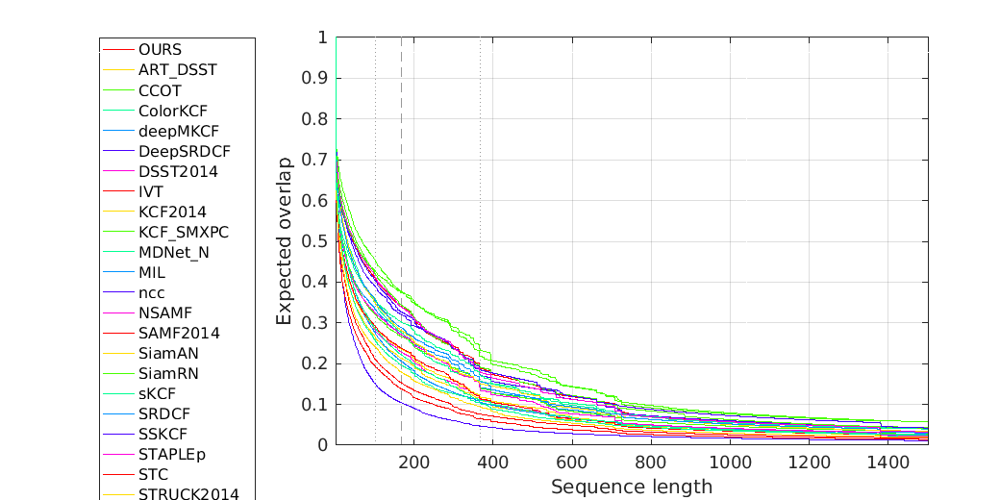
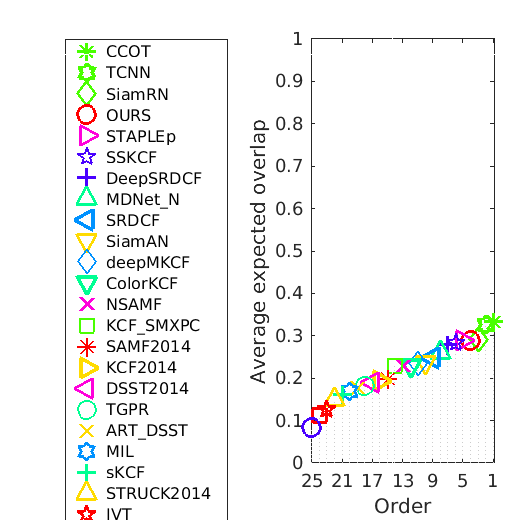
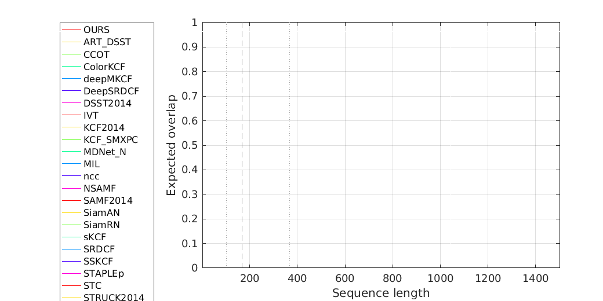
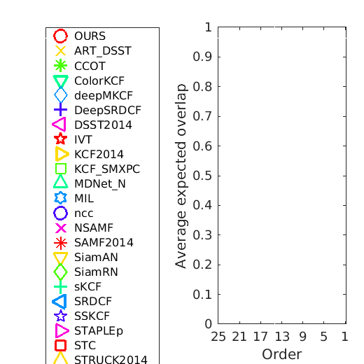
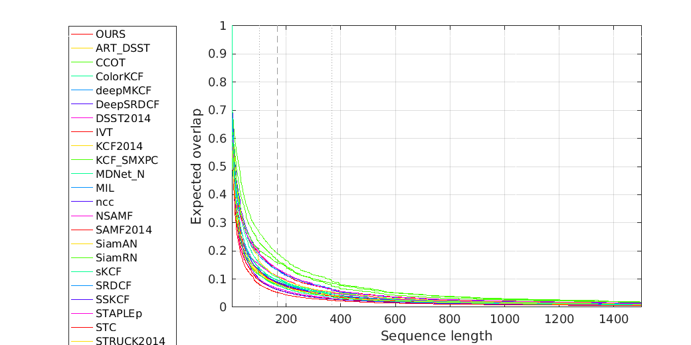
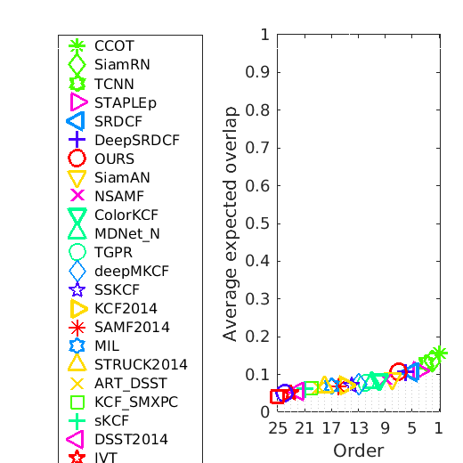
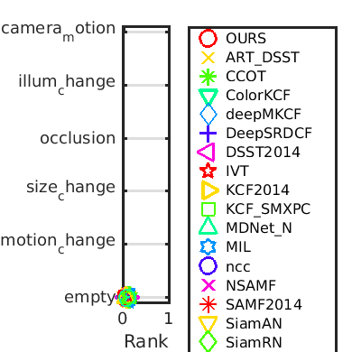

Expected overlap analysis
Experiment baseline

Expected overlap curves for baseline

Expected overlap scores for baseline
Tag camera_motion

Expected overlap curves for baseline (camera_motion)

Expected overlap scores for baseline
Tag illum_change
Expected overlap curves for baseline (illum_change)
Expected overlap scores for baseline
Tag occlusion
Expected overlap curves for baseline (occlusion)
Expected overlap scores for baseline
Tag size_change
Expected overlap curves for baseline (size_change)
Expected overlap scores for baseline
Tag motion_change

Expected overlap curves for baseline (motion_change)
Expected overlap scores for baseline
Tag empty

Expected overlap curves for baseline (empty)

Expected overlap scores for baseline
Overview
Scores calculated as an average over interval 102 to 367

Ordering plot for expected overlap
| all | camera_motion | illum_change | occlusion | size_change | motion_change | empty | |
|---|---|---|---|---|---|---|---|
| CCOT | 0.33 | NaN | NaN | NaN | NaN | NaN | 0.16 |
| TCNN | 0.33 | NaN | NaN | NaN | NaN | NaN | 0.13 |
| SiamRN | 0.29 | NaN | NaN | NaN | NaN | NaN | 0.14 |
| OURS | 0.29 | NaN | NaN | NaN | NaN | NaN | 0.11 |
| STAPLEp | 0.29 | NaN | NaN | NaN | NaN | NaN | 0.11 |
| SSKCF | 0.28 | NaN | NaN | NaN | NaN | NaN | 0.07 |
| DeepSRDCF | 0.28 | NaN | NaN | NaN | NaN | NaN | 0.11 |
| MDNet_N | 0.26 | NaN | NaN | NaN | NaN | NaN | 0.08 |
| SRDCF | 0.25 | NaN | NaN | NaN | NaN | NaN | 0.11 |
| SiamAN | 0.24 | NaN | NaN | NaN | NaN | NaN | 0.09 |
| deepMKCF | 0.24 | NaN | NaN | NaN | NaN | NaN | 0.07 |
| ColorKCF | 0.23 | NaN | NaN | NaN | NaN | NaN | 0.09 |
| NSAMF | 0.23 | NaN | NaN | NaN | NaN | NaN | 0.09 |
| KCF_SMXPC | 0.23 | NaN | NaN | NaN | NaN | NaN | 0.07 |
| SAMF2014 | 0.20 | NaN | NaN | NaN | NaN | NaN | 0.07 |
| KCF2014 | 0.20 | NaN | NaN | NaN | NaN | NaN | 0.07 |
| DSST2014 | 0.19 | NaN | NaN | NaN | NaN | NaN | 0.05 |
| TGPR | 0.18 | NaN | NaN | NaN | NaN | NaN | 0.08 |
| ART_DSST | 0.18 | NaN | NaN | NaN | NaN | NaN | 0.07 |
| MIL | 0.17 | NaN | NaN | NaN | NaN | NaN | 0.07 |
| sKCF | 0.16 | NaN | NaN | NaN | NaN | NaN | 0.06 |
| STRUCK2014 | 0.15 | NaN | NaN | NaN | NaN | NaN | 0.07 |
| IVT | 0.13 | NaN | NaN | NaN | NaN | NaN | 0.05 |
| STC | 0.11 | NaN | NaN | NaN | NaN | NaN | 0.04 |
| ncc | 0.08 | NaN | NaN | NaN | NaN | NaN | 0.05 |